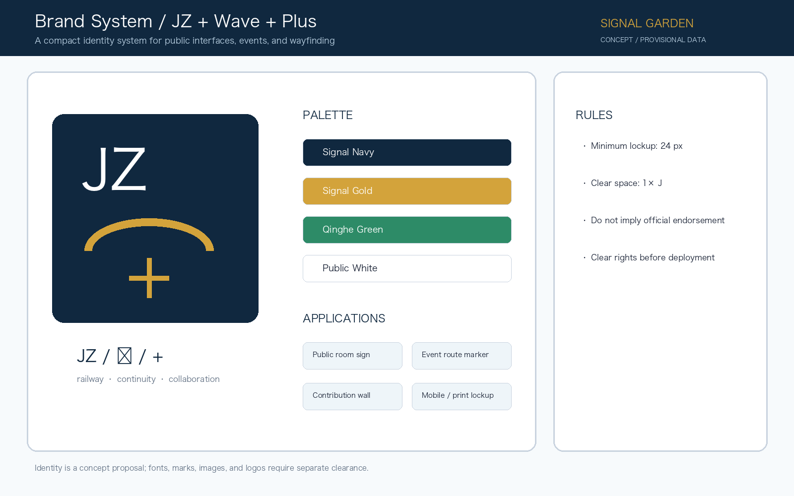

Jing-Zhang Signal Commons
A verifiable AI public-innovation belt organized around the Jing-Zhang heritage park, three innovation anchors, and a reversible signal-garden operating protocol.
Jing-Zhang Signal Commons
Design Basis and Source List
This formal proposal responds to the Centennial Jing-Zhang AI Innovation Belt announcement, the maintained site package, the agent taskbook, and the public source registry Source Source. The package keeps the repository's provisional boundary visible: it supports concept generation, intake review, and reproducible comparison, but is not an official redline or an approved planning control. When official polygons are published, all geometry, figures, metrics, and drawings must be recalculated Spatial data Metric.
The design identity is “Signal Garden”. Railway signal discipline becomes an open urban protocol: publish the data boundary first, open a bookable public test second, and keep human review in the loop. The JZ / wave / plus mark connects railway memory, blue-green continuity, and cross-disciplinary collaboration. All marks, typefaces, historic images, and enterprise identities remain subject to rights clearance.

The “three zones and two wings” becomes a concrete collaboration loop: the three key areas handle research, translation, and urban demonstration; Beiwei Community provides resident feedback and daily services; Future Science City and Huairou Science City provide research and verification; the Beijing Economic-Technological Development Area provides industrialisation and manufacturing; and the wider Jing-Jin-Ji region provides scenario diffusion and talent exchange. The loop is research → translate → test → operate → share, and every external collaboration remains a concept proposal pending public evidence and professional confirmation Source Depth.
Three-Level Scope Framework
The proposal moves from a 43.6 square kilometre coordinated research area, to an approximately 11.4 square kilometre overall design area, and then to three detailed key areas. The first level frames the innovation ecosystem and future-city strategy; the second translates it into land use, renewal, mobility, municipal support, and public space; the third tests the strategy through specific anchors Depth Spatial data.
The three levels are not separate illustrations. “Signal Garden” uses one heritage-park slow-mobility spine, three innovation anchors, and a network of public interfaces. The spatial evidence is provisional and should be replaced rather than silently upgraded when official data arrives Depth Metric.
Coordinated Research Area: Industry and Future City Research
The coordinated strategy links universities, open-source communities, start-ups, leading firms, public services, and international exchange. Three positions guide the work: a heritage-led innovation belt, a daily AI-life experience belt, and an open full-stack collaboration belt. Five functions are proposed: research, translation, public testing, talent life, and global exchange Standard.
Eight reference cases inform the proposal: Shenzhen Open Innovation Lab, MIT Media Lab, Barcelona 22@, Helsinki Oodi, Seoul Digital Media City, London King’s Cross, Singapore one-north, and Paris Station F. They are not copied as plans; their transferable lessons are open interfaces, mixed-use proximity, public learning, shared testing, and long-term community operations Source.
Overall Design Area: Urban Renewal and Regulatory-Plan-Level Urban Design
The overall structure combines an AI research strip, a Jing-Zhang blue-green park spine, a service-and-commerce conversion belt, and daily living interfaces. The design layers describe a concept-level renewal framework: retain valuable fabric, renovate adaptable buildings, add reversible public interfaces, and reserve parcel-level demolition or new construction for later professional verification Spatial data Depth.
Building intensity, height, setbacks, ownership, road redlines, and municipal capacity remain pending official data. The package therefore records them as assumptions rather than invented statutory values. The proposed building layer is a reviewable design quantity, not a legal control Spatial data Metric.
Detailed Design of Key Areas
Zhongzhiyuan AI Acceleration Area becomes a garden-like full-stack test district: the river interface, low-carbon public room, safety-governance sandbox, and enterprise-facing exhibition route are linked by the signal line Spatial data. Beijing AI Origin Community becomes a near-campus translation neighbourhood with open-source publishing, talent services, results transfer, and a walkable school-campus interface Spatial data.
Dazhongsi AI Industry Cluster becomes an urban smart-economy living room. Its concept focuses on station integration, four-quadrant walking continuity, intelligent agents and devices, data-element explanation, and international demonstration. Each anchor needs a detailed professional test of access, ownership, utilities, fire safety, heritage, and public acceptance before implementation Spatial data Depth.
AI Innovation Ecosystem, Personas, and AI+ Scenarios
The core users are open-source developers, early-stage teams, enterprise visitors, nearby residents, university teachers and students, and public-service operators. Their shared need is not a spectacular object but a trustworthy interface between research, daily life, and accountable public space Source Metric.
Ten scenario cards are proposed: open-source publishing hall; city-agent sandbox; slow-mobility gap diagnosis; talent-life concierge; AI safety governance corridor; university-enterprise translation room; data-element theatre; low-carbon edge-compute station; Jing-Zhang memory route; and global AI activity-week route. At least the sandbox, mobility diagnosis, safety corridor, and edge-compute station require industry testing with consent, logs, red-team review, and human sign-off Spatial data Depth.
Three industry test cards use explicit protocols. T1 tests a transport/operations agent with public aggregated data, red-team review, and an immediate exit gate for unsafe or unexplained outputs. T2 tests accessible-route diagnosis with public networks, manual reports, field checks, and mandatory human takeover. T3 tests edge-compute capacity and privacy budget; exceeding energy, capacity, or privacy limits stops the trial. Baselines, reviewers, logs, and final KPIs remain pending before any real pilot Spatial data Spatial data.
Inclusion does not assume smartphone access. Older adults and non-digital users receive staffed counters and paper wayfinding; children receive low-speed public learning nodes without commercial recommendation; disabled users receive continuous accessible routes, low-vision wayfinding, seating, and shade; low-income users receive free public hours and basic services; night workers receive lighting, rest, sanitation, and night staffing. Every scenario keeps appeal, withdrawal, human override, log access, and stop conditions Spatial data Depth.
Land Use, Building Scale, and Retain-Renovate-Demolish Strategy
The land-use partition is a complete conceptual partition of the submitted boundary, using shared edges rather than independent rectangles. Research, blue-green open space, service-and-commerce, and living interfaces form the spatial logic of the signal garden Spatial data Depth.
The retain-renovate-demolish decision is deliberately staged. Existing value, public access, adaptability, rights, and safety must be surveyed first; reversible street interfaces and public programming can begin earlier. FAR, height, density, and parcel-level demolition remain unknown until official controls and field evidence are available Standard Depth.
Transport, Rail, Municipal Infrastructure, and Public Services
The signal line is a continuous walking-and-cycling route with accessible wayfinding, station interfaces, public-service nodes, and bookable AI scenarios. It is a concept corridor, not a road-redline claim. The design asks professional teams to test crossings, parking, bicycle storage, emergency access, utilities, drainage, flood resilience, and station operations Spatial data Depth.
Municipal and digital infrastructure should be layered rather than hidden: distributed energy, edge computing, public-service interfaces, water and drainage resilience, and maintenance access are evaluated together. No operational promise is made without a future owner, safety review, and data-minimisation protocol Spatial data Depth.
Blue-Green Network, Public Space, and Urban Character
The Jing-Zhang heritage park, Qinghe and the surrounding campus, enterprise, and neighbourhood routes become one blue-green public system. The green layer provides shade, stormwater, slow movement, and low-carbon demonstration; the public-space layer provides four types of room: publish, test, live, and remember Spatial data Spatial data.
Three conceptual AI pilgrimage and honour nodes are proposed: the Signal Garden Commons at the park, the Open Contribution Wall at AI Origin, and the Trusted Systems Gallery at Dazhongsi. They are public-display concepts, not approved monuments. Their cultural narrative joins railway memory, Zhongguancun innovation, and a new culture of accountable AI Depth Standard.
Renewal Projects, Implementation Policy, and Phasing
Six projects create a reversible sequence: repair the park slow-mobility gaps; establish the Qinghe innovation interface; build the near-campus translation street; connect the Dazhongsi station quadrants; prototype public AI and edge-compute nodes; and curate the global AI activity route Spatial data Depth.
The first phase uses wayfinding, movable furniture, open events, reservation rules, and public review. The middle phase tests adaptable buildings and shared services. The long phase depends on official controls, rights, infrastructure, and professional design. A proposed annual cycle—weekly open tests, monthly evidence reviews, and an annual global AI week—keeps operations accountable without claiming a confirmed government programme Depth.
The six projects are also assigned reviewable actor types and stop conditions: a public-space team and community for JZ-01, a blue-green team and operator for JZ-02, a campus/park partner and service team for JZ-03, a rail/road professional team for JZ-04, a data-governance team and operator for JZ-05, and a community/event team for JZ-06. Near-term gates cover road redlines, ownership, utilities, fire safety, accessibility, privacy, rights, and public permission. These are not confirmed government, corporate, or funding commitments; they are concept-level implementation controls Depth Depth.
Metrics, Area Recalculation, and Compliance Matrix
The package exposes site area, green ratio, public-space ratio, building footprint, key-area count, and phase quantities as reproducible geometry metrics. The current rounded intake area is 11,412,825.4 square metres, the green ratio is 0.123423, and the public-space ratio is 0.073281; these values are tied to provisional geometry, not official controls Metric Metric Metric.
The compliance matrix covers the announcement tasks, the six agent tasks, professional standards, and design-depth items. Unknown controls remain visibly pending. Replacing the provisional polygons triggers a full recalculation of land use, buildings, roads, blue-green space, public space, phasing, figures, and the self-check record Depth Source.
Risk, Copyright, and Compliance
The principal risks are provisional boundaries, missing controls, rights and ownership uncertainty, infrastructure capacity, privacy, unequal access, public acceptance, and operating cost. AI scenarios use minimum data, aggregated outputs, explicit consent where needed, and human review. They cannot replace planning approval, public participation, or professional judgement Depth Spatial data.
All figures and drawings in this package are participant-authored explanatory diagrams generated from the package data. They are not site photographs, public-consent evidence, official renderings, or construction commitments. Rights, tools, and limitations are recorded in report/copyright_statement.md.
The copyright ledger lists each local figure, PDF, HTML page, logo, font, external source, code/tool, and dataset with author, source, licence, redistribution scope, and limitation. Any visual asset without clear rights is excluded from the package Source.
References
The primary references are the official announcement, the maintained site package, the agent taskbook, the public source registry, the formal submission guide, the local professional-standard snapshots, and the repository contribution guide Source Source. Complete provenance, assumptions, formulas, task coverage, standards, and design-depth evidence remain in the structured files so the proposal can be audited and recalculated.